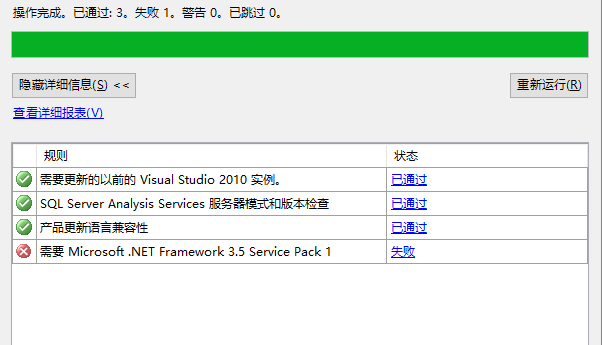

在安装SqlServer的时候，如果不出现错误，那将是非常简单，一路上点下去“下一步”就ok了。
但是，天有不测风雨。。。。
我在win10上安装的时候就出现了一个错误，而且是比较蛋疼的错误，使用了好多种办法，终于把他解决了，下面作为分享仅供遇到同类问题的同学参考：

- 当出现了这个错误的时候，找到你原来的镜像文件，拷打自己的硬盘里，双击或者加载。
- cmd命令进入windows黑框，使用dism命令
- 将下列命令拷过去，运行。
- 具体命令为：dism /online /enable /enable-feature /featurename:NetFX3 /Source:D:\source\sxs
- 注意：D:\source\sxs是你加载出来的镜像的地址，点击驱动器进去你可以看到\source\sxs文件夹